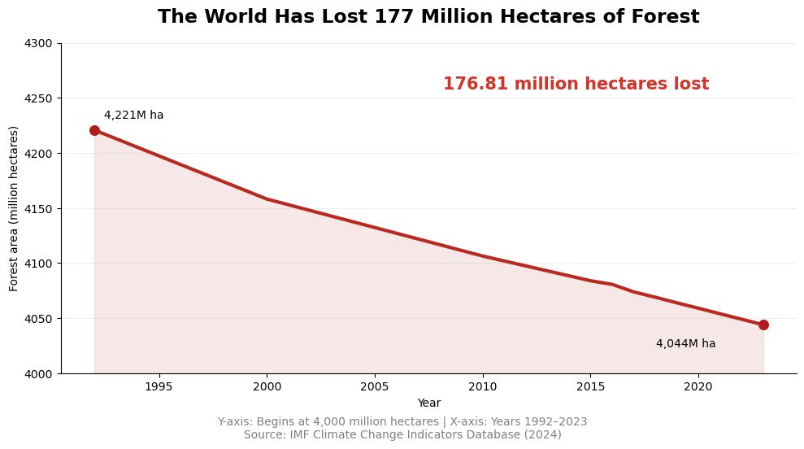

Global forest area has fallen since 1992
A global total frames the change in absolute terms, showing the amount of forest lost.

Design decisions and rationale
- Truncated y-axis (−1): Beginning at 3,900M hectares makes a 4.2% decline occupy more visual space; the axis is disclosed in the source line.
- Prominent absolute-loss annotation (−1): Directs attention to 176.81M hectares rather than the smaller-looking percentage.
- Red line and shaded region (−0.5): Emphasizes loss through a consistent visual metaphor.
- Full 1992–2023 window (+1.5): Gives long-term context without selecting only the steepest years.